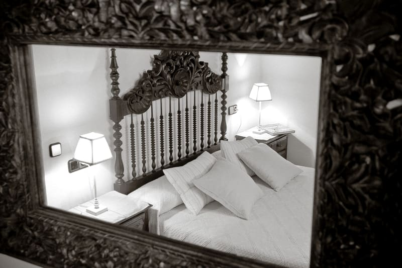
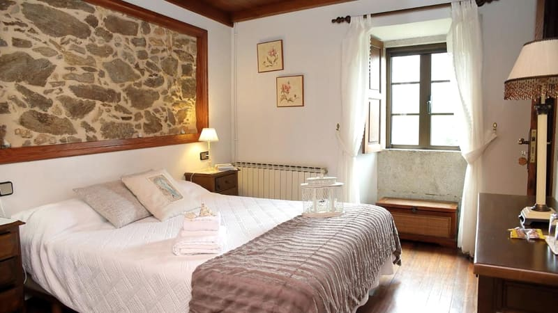
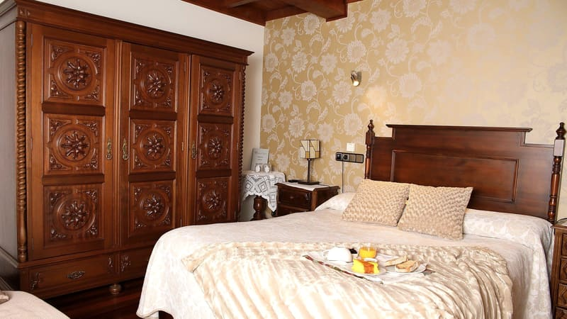
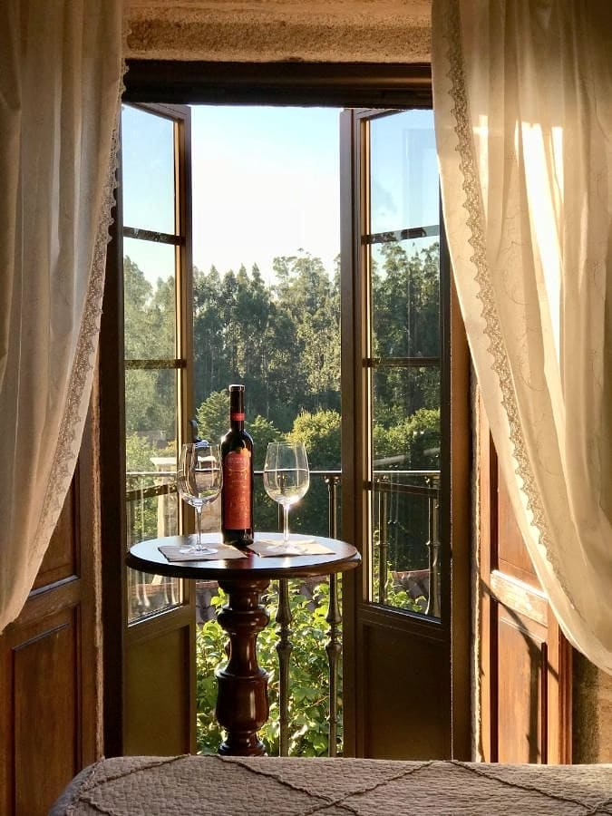
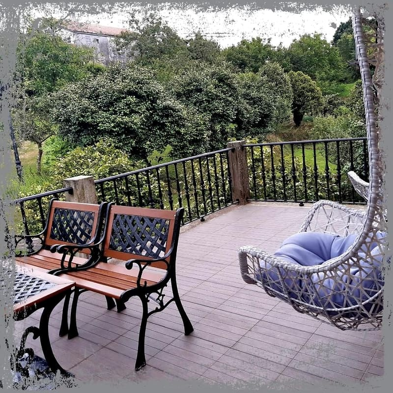
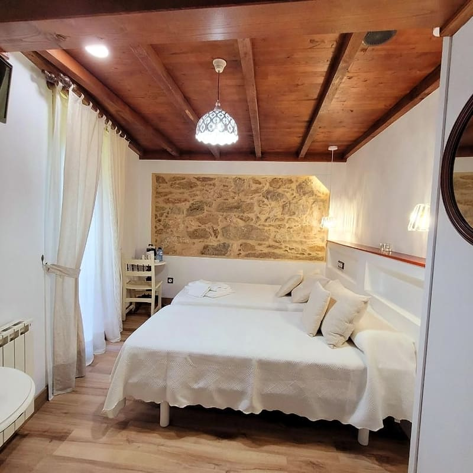
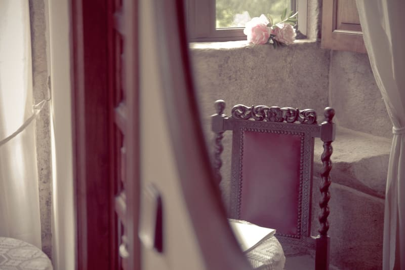
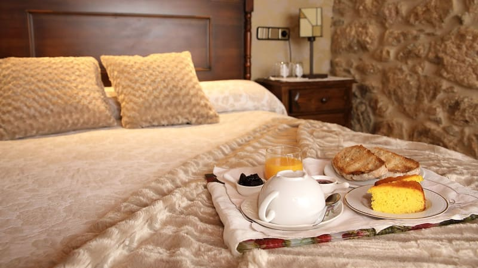
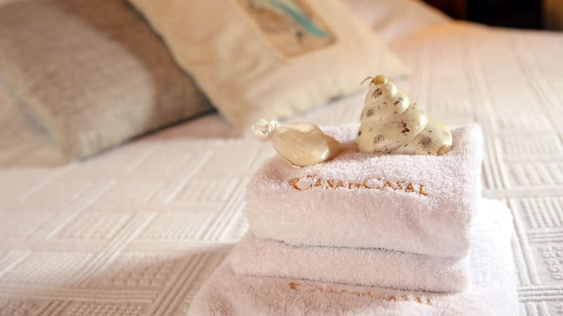
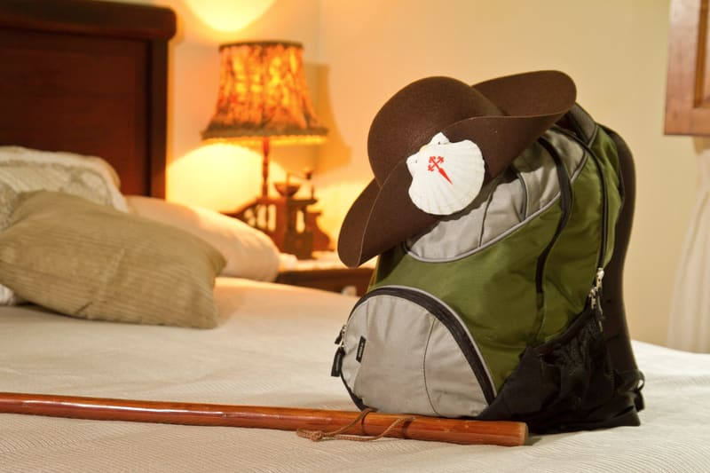

Habitaciones
Tu habitación

«Paso a paso ante mí se abre el camino. Recuerdos de tesoros naturales, deliciosos ágapes y buenas gentes traigo conmigo. Dulces sueños en mullidos lechos… cual reyes he dormido. Nada de esto antes había vivido.»
Tenemos la habitación perfecta para ti
Todas tienen televisor, secador de pelo, productos de acogida personalizados, esponjosas toallas y Wifi. Como extras puedes solicitar gratis mini nevera y pack para infusiones.
Tú decides: baño relajante o una reconfortante ducha de lluvia.
Los tipos de habitación
-

Planta baja · sin escaleras
Clásicas
Habitaciones clásicas en planta baja. Pensadas para ti, si necesitas evitar subir escaleras. Aquí se encuentra la habitación con baño adaptado. Son la opción más económica, pero con los mismos servicios.
58 € desde, por noche
Ver fechas: Clásicas -

Primera planta · vistas al valle
Confort
Gracias a su localización en la primera planta podrás admirar el precioso paisaje del Valle del Ulla desde la ventana. Son el lugar ideal para parejas más tradicionales con sus camas de matrimonio de 1,50. Paredes de piedra y muebles tallados a mano con un aire rústico-elegante.
68 € desde, por noche
Ver fechas: Confort -

Primera planta · balcón
La Torre
Asómate al balcón en la habitación La Torre. Una de las mejores vistas de la casa. Si eres de los que necesitan espacio para dormir, las dos camas de 1,05 se transforman, gracias al sobrecolchón de 2,10 × 1,90, en una de matrimonio donde perderte. Se puede añadir una supletoria.
70 € desde, por noche
Ver fechas: La Torre -

Primera planta · terraza de 12 m²
Con terraza
Nuestra habitación con terraza privada de 12 m² es la elección perfecta para disfrutar de las tardes de verano. Decorada con muebles blancos y algunos detalles en verde, es la más luminosa.
75 € desde, por noche
Ver fechas: Con terraza -

Para 2 adultos y 2 niños
Pico Sacro
Si viajas con niños pequeños, en la habitación Pico Sacro tienes el espacio que necesitas. Consta de dos camas de matrimonio. Máximo 2 adultos y 2 niños.
85 € desde, por noche
Ver fechas: Pico Sacro
| Tipo | Planta | Camas | Lo suyo | Desde |
|---|---|---|---|---|
| Clásicas | Baja | Doble | Sin escaleras; baño adaptado | 58 € |
| Confort | Primera | 1,50 | Vistas al valle del Ulla | 68 € |
| La Torre | Primera | 2 × 1,05 (o 2,10) | Balcón; supletoria | 70 € |
| Con terraza | Primera | Doble | Terraza privada de 12 m² | 75 € |
| Pico Sacro | — | 2 de matrimonio | Familiar, 2 + 2 | 85 € |
| Casa Pequena | Aparte | 1,60 × 2,00 | Cocina y jardín propios | Consultar |
Cada habitación, una leyenda
Las habitaciones llevan nombres de los personajes y las leyendas de alrededor.




¿Te quedas?
Llama o escribe por WhatsApp al 698 148 323. Se habla inglés y francés.
Ver disponibilidad